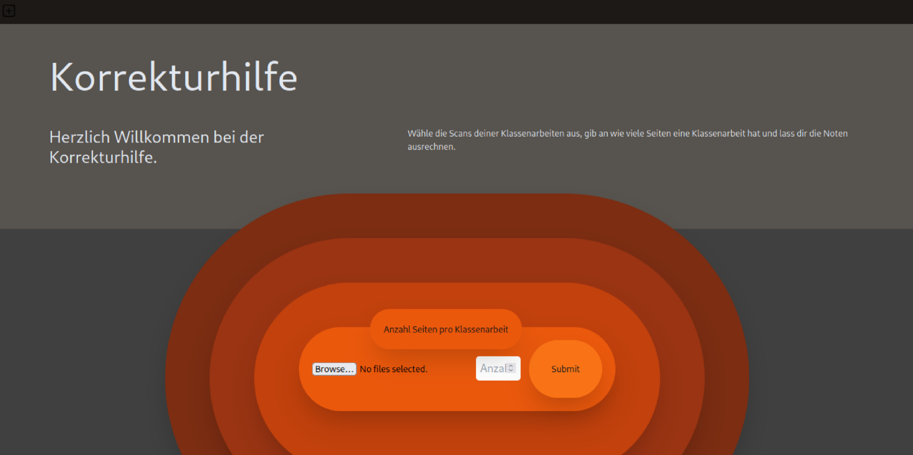
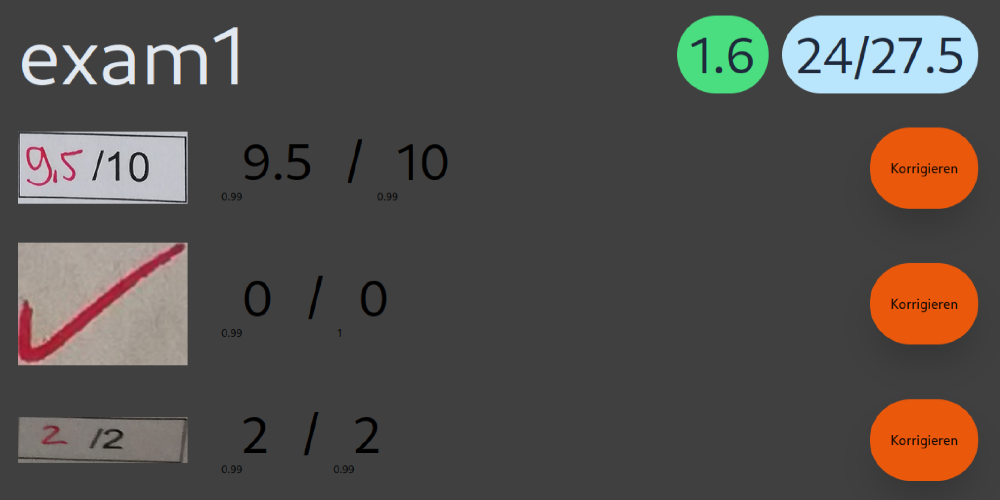
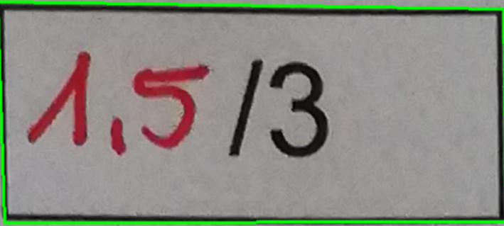
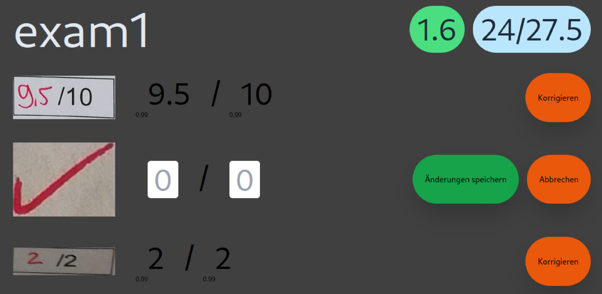

<div
  class="korrekturhilfe-card mt-40 rounded-3xl border border-gray-400 p-6 xl:mt-96 xl:p-20"
>
  <div class="grid-cols-2 gap-32 xl:grid">
    <div class="col-start-2 xl:grid grid-cols-10 grid-rows-10">
      
      
      
      
    </div>
    <div class="row-start-1 flex flex-col gap-10">
      <h3 class="text-left text-4xl">Teachers aid</h3>
      <div class="transparent border border-neutral-500 p-4 text-left">
        The teachers aid project was built as part of a uni assignment. It
        consists of a frontend built in React
        <span class="inline-block"
          ></span>
        and a backend built with python
        <span class="inline-block"
          ></span>
        using the flask framework. It enables the user to upload marked up pdf
        exams. The program then reads the red markup with OpenCV and recognizes
        the characters using the Google Cloud Vision Api. The user is then shown
        the results and can correct them if necessary.
      </div>
      <a href="https://github.com/Davidcode2/Projektarbeit">
        
      </a>
      <div class="flex flex-col gap-4 xl:flex-row">
        <div class="transparent rounded-lg border border-neutral-500 p-4">
          <div class="flex">
            <div>Repository:</div>
            <a href="https://github.com/Davidcode2/Projektarbeit"
              ><div class="ml-2 text-pink-500">Korrekturhilfe</div></a
            >
          </div>
        </div>
        <div class="transparent rounded-lg border border-neutral-500 p-4">
          <div class="flex">
            <div>Status:</div>
            <div class="ml-2 text-green-500">Prototype</div>
          </div>
        </div>
        <div class="transparent rounded-lg border border-neutral-500 p-4">
          <div class="flex">
            <div>Tools:</div>
            <div class="ml-2 text-blue-500">React</div>
            <div class="ml-2 text-purple-500">Python</div>
            <div class="ml-2 text-fuchsia-500">Flask</div>
          </div>
        </div>
      </div>
    </div>
  </div>
</div>
